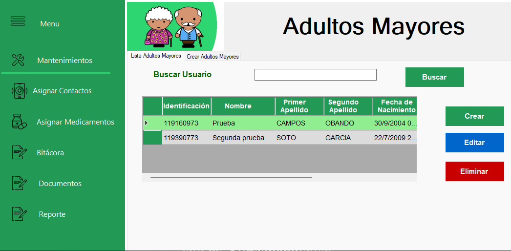

Introducción al Sistema BDK
Bienvenido al sistema integral de gestión para adultos mayores. Esta solución tecnológica está diseñada para optimizar la administración de residentes, medicamentos, usuarios, bitácora, reportes y contactos de emergencia.
En esta sección:
Acerca del Sistema
BDK es una aplicación de escritorio desarrollada en C# con conexión a SQL Server, diseñada específicamente para satisfacer las necesidades de la institucion. Ofrece:
- Gestión centralizada de residentes y sus datos
- Seguimiento y visualizacion de su documentación
- Control de medicación
- Generación de reportes de los adultos mayores

Vista general de la interfaz principal del sistema
Funcionalidades Clave
Gestión de Residentes
- Registro completo de datos personales
- Contactos de emergencia y familiares
- Control de actividades y rutinas
Control de Medicación
- Control de dosis
- Registro de medicamentos
- Inventario y caducidad de fármacos
Reportes y Documentación
- Generación automática de reportes
- Formatos predefinidos para regulaciones
- Exportación a PDF
Requisitos Técnicos
| Componente | Mínimo | Recomendado |
|---|---|---|
| Sistema Operativo | Windows 10 | Windows 11 |
| SQL Server | 2016 Express | 2019 Standard |
| Memoria RAM | 4 GB | 8 GB |
| Espacio en Disco | 2 GB | 5 GB |
| Resolución | 1366x768 | 1920x1080 |
Importante: Se requiere conexión a la red local para acceso a la base de datos centralizada.
Módulos Principales
Gestión de Residentes
- Historial social
- Preferencias personales
- Contactos de emergencia
Esencial
Historial de medicamentos
- Registro de medicamentos
- Control de dosis
- Asignación de medicamentos
Gestiones del adulto mayor
- Historial del adulto mayor durante el día
- Adjuntos de documentos